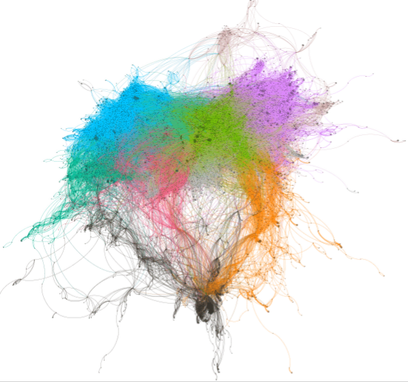
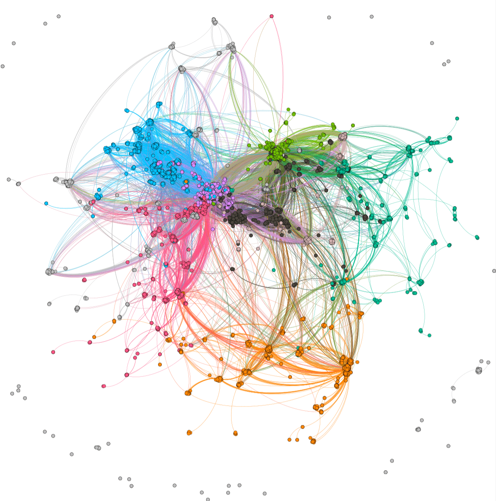
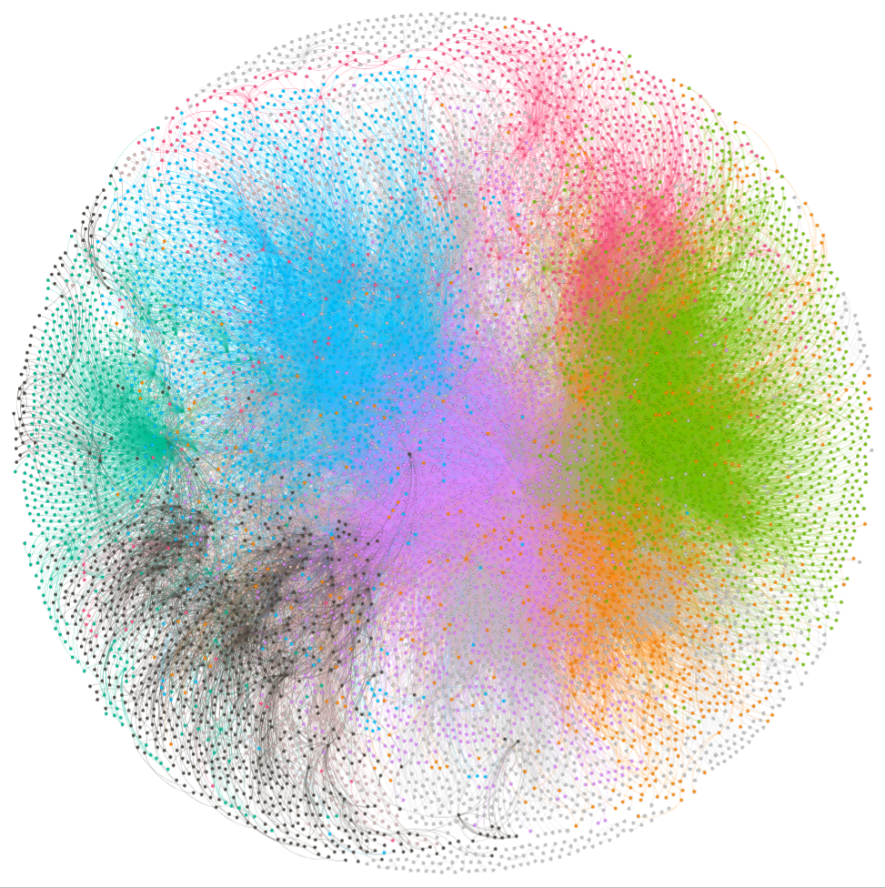
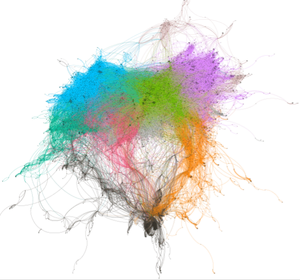
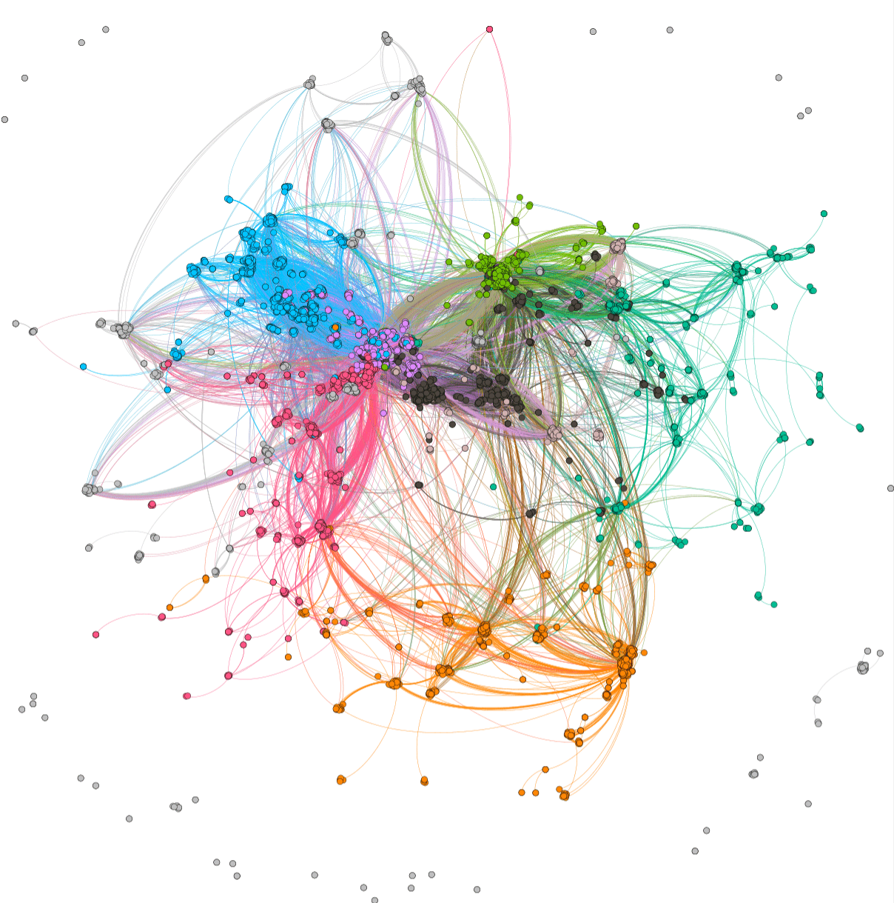
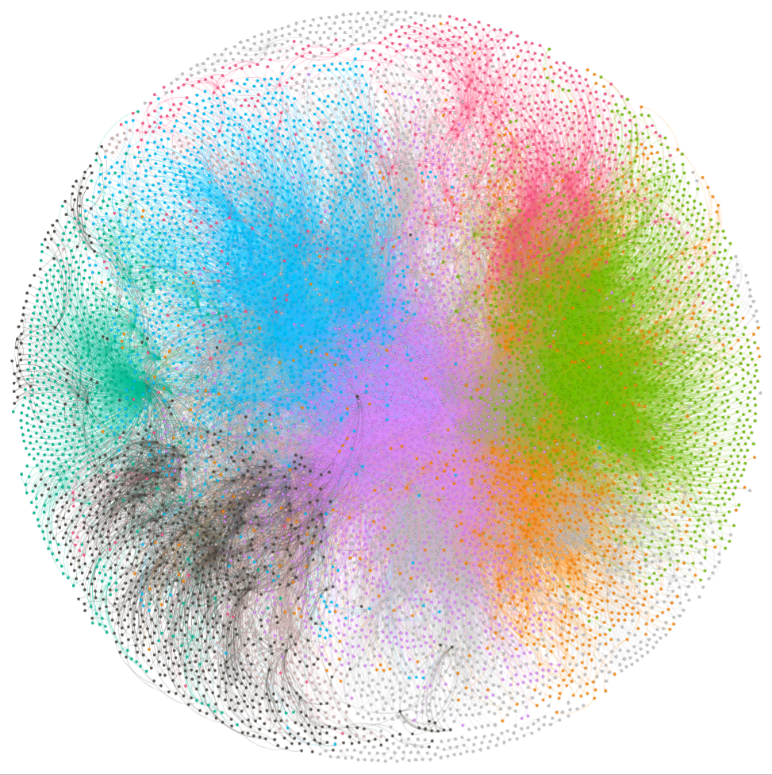

ForceAtlas2
OpenOrd
Fruchterman Reingold
YiFan Hu

The goal of this project is to process and analyze the metadata of academic papers from Crossref,
and build a directed graph that represents the mutual citation relationship between each academic paper.
After that, a scientific community will be formed through related graph clustering algorithms.
At the same time, we can know which communities most frequently cite each other’s articles and which ones are closed communities
ForceAtlas2
OpenOrd
Fruchterman Reingold
YiFan Hu